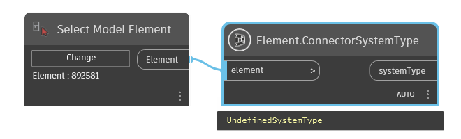
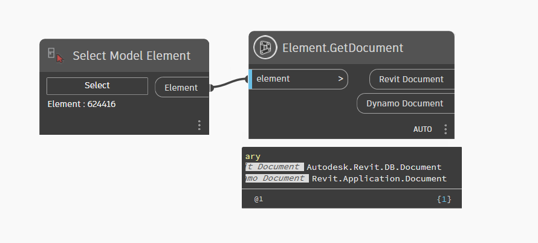
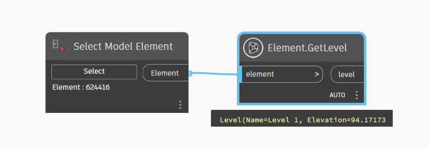
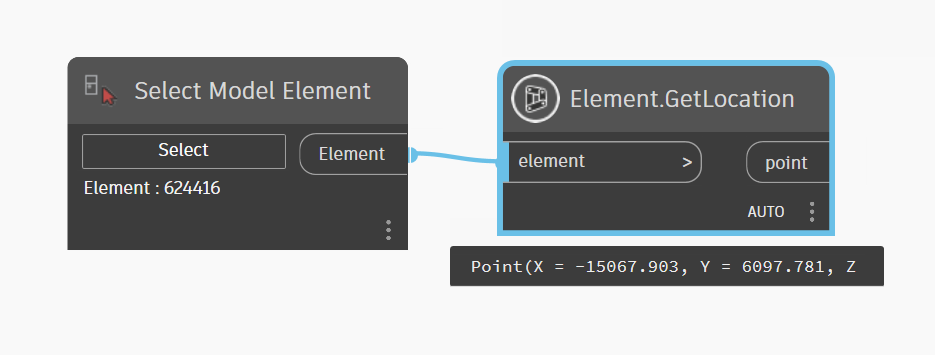
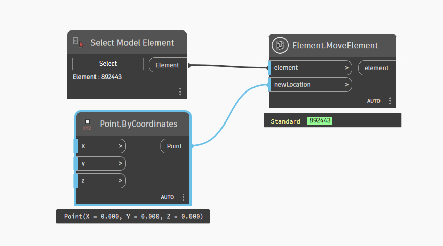
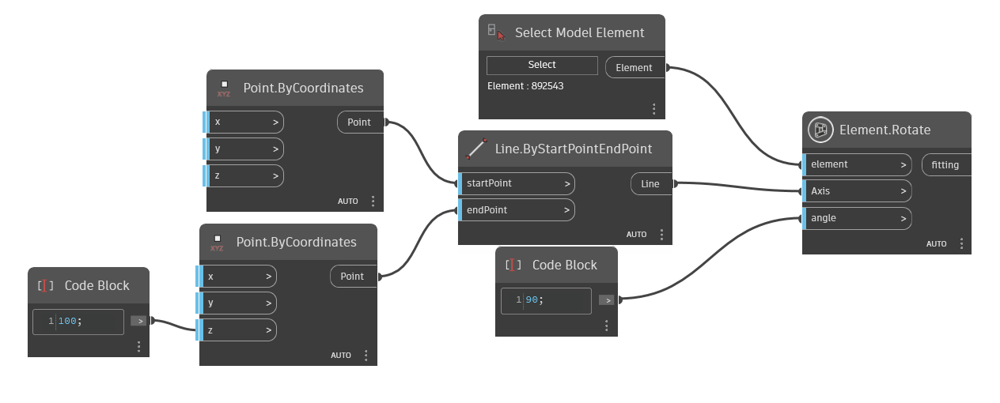
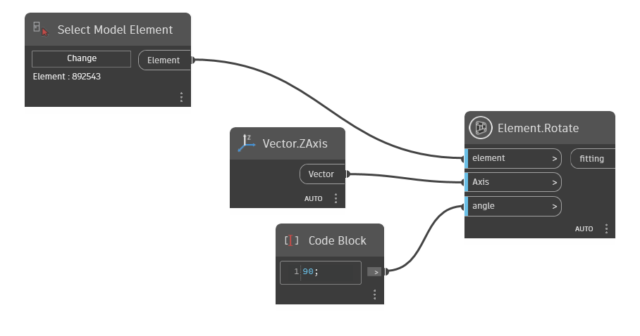
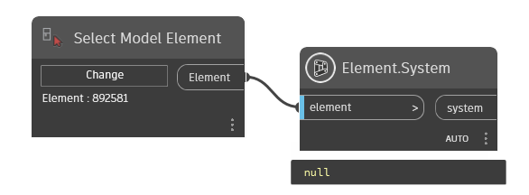
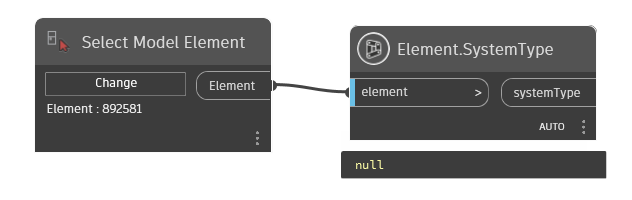

Class Element
- Namespace
- OpenMEP.Element
- Assembly
- OpenMEP.dll
Base class for most persistent data within a Revit document.
public class Element- Inheritance
-
Element
- Inherited Members
Remarks
The data in a Revit document consists primarily of a collection of elements. An element usually corresponds to a single component of a building or drawing, such as a wall, door, or dimension, but it can also be something more abstract, like a wall type or a view. Every element in a document has a unique ID, represented by the ElementId class.
Methods
ConnectorSystemType(Element)
Returns the MEP System Type from connectors of the element
public static dynamic? ConnectorSystemType(Element element)Parameters
elementElementthe element of mep
Returns
- dynamic
system type from connector of element
Examples

GetDocument(Element)
Returns the Document in which the Element resides
[NodeCategory("Query")]
[MultiReturn(new string[] { "Revit Document", "Dynamo Document" })]
public static Dictionary<string, object?> GetDocument(Element element)Parameters
elementElementthe element
Returns
Examples

GetLevel(Element)
Return Level Of Element
public static Element? GetLevel(Element element)Parameters
elementElementelement to get level
Returns
- Element
level of element
Examples

GetLocation(Element?)
Return A Location Of Element
public static Point? GetLocation(Element? element)Parameters
elementElement
Returns
- Point
location of element
Examples

MoveElement(Element, Point)
Move element to new location
public static Element MoveElement(Element element, Point newLocation)Parameters
elementElementelement to move
newLocationPointtranslate
Returns
- Element
family instance
Examples

Rotate(Element, Line, double)
Set Rotate of fitting
[NodeCategory("Action")]
public static Element Rotate(Element element, Line Axis, double angle)Parameters
elementElementthe element
AxisLineLine Axis
angledoubleangle to rotate(Degrees)
Returns
- Element
family instance
Examples

Rotate(Element, Vector, double)
Set Rotate of fitting
[NodeCategory("Action")]
public static Element Rotate(Element element, Vector Axis, double angle)Parameters
elementElementthe element
AxisVectorDirection Axis
angledoubleangle to rotate(Degrees)
Returns
- Element
family instance
Examples

System(Element)
The system of the MEP element belong to.
public static Element? System(Element element)Parameters
elementElementthe element to get system
Returns
- Element
mep system of element
Examples

SystemType(Element)
return type of MEP System
public static Element? SystemType(Element element)Parameters
elementElementthe element of mep
Returns
- Element
system type of element from connector
Examples
